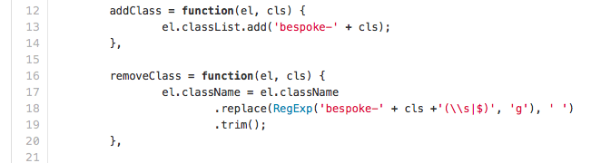
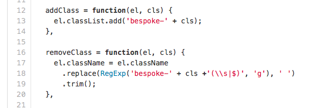

Spaces...
...or why you're an idiot if use tabs
Spaces conjour images of
Wonder
Human achievement
Tabs on the other hand
Shitty soft drink
Even shittier tablets
Basically poor life choices
Google autocomplete
The social commentary of our generation
A space is space is a space
A tab is whatever your editor decided was a good idea
Infact
Tabs is a recursive acronym
Tabs. Are. Bad. Spaces
True story
Tabs are so bad browsers introduced tab-size
So tabs could look more like spaces
The browser default for tab-size is 8...
Even browser vendors hate you for using tabs
But Ryan you say
You can set the tab-width to your liking
Gross
Nice
No serious OSS uses tabs
- Angular, nope
- React, nope
- Ember, nope
- jQuery, yes
The jQuery backlash is 100% due to their use of tabs, fact.
Not even...
dramatic, pause
find . -name '*' -type f -exec sed -i "" "s/ / /g" {} \;
"...only a moron would use tabs to format their code."
— Jeff Atwood